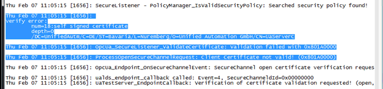

OPC UA Local Discovery Server 1.02
OPC UA Local Discovery Server 1.02
OPC UA Local Discovery Server 1.02
First step in the Troubleshooting process is to look in the log file for information. The log file can provide verbose information to help identify any problem.
The log file for Local Discovery Server is configured in the Settings file, but some examples are shown here:
Windows: C:\work\ualds\dist\bin\ualds.log
Linux: /var/log/ualds.log
Users can configure the traceability level by using the configuration file for Windows or Linux.
By default, verbose logging is disabled in order to conserve resources. Verbose logging will cause a performance decrease and should be enabled only when necessary.
Open the LDS configuration file and then modify the following settings as necessary:
[Log]
# Log System: file (custom log file), stderr
LogSystem = file
# LogFile: path to logfile. This is only required for LogSystem=file.
LogFile = C:/work/ualds/dist/bin/ualds.log
# Log Level: error, warn, info, debug
LogLevel = info
In the above example you would modify the "LogLevel" to "debug". Restarting the LDS is required for the settings to take effect.
Remember: when you have finished troubleshooting you should revert the configuration back to normal and eliminate verbose logging.
As you can see from the below screen-shot there is a problem with the certificate validation: “Validation failed with 0x801A0000”:

Since the error relates to the certificate you could check the certificate store under the “rejected” repository for a rejected certificate and if found then you could simply move it to the “trusted” repository to fix the error.